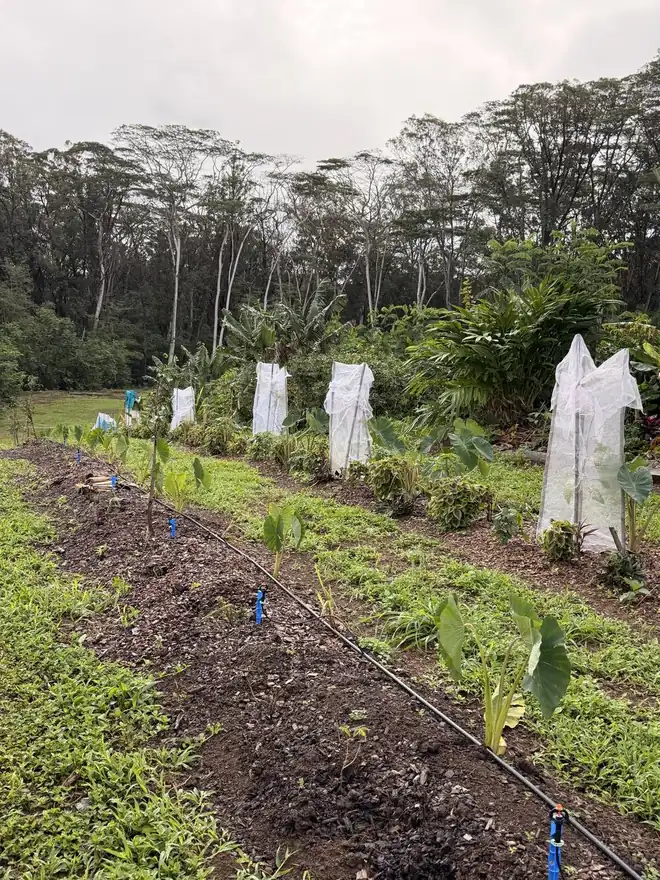
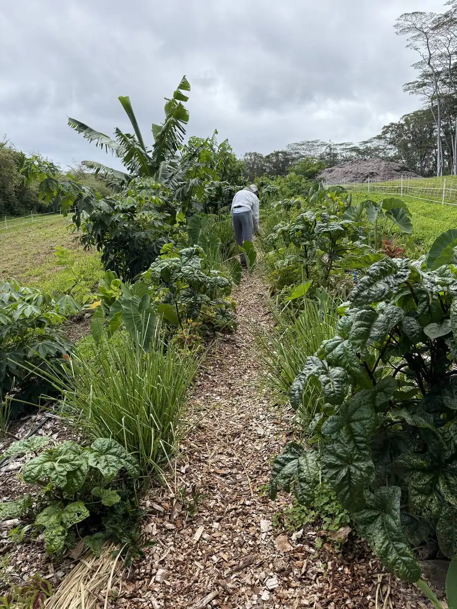
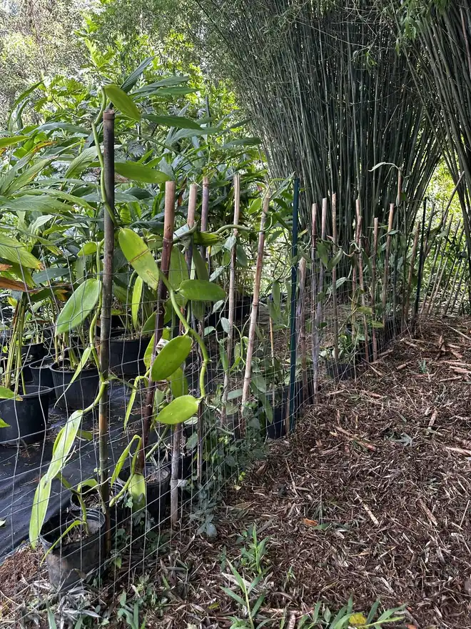
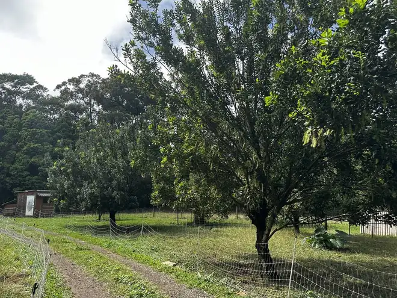
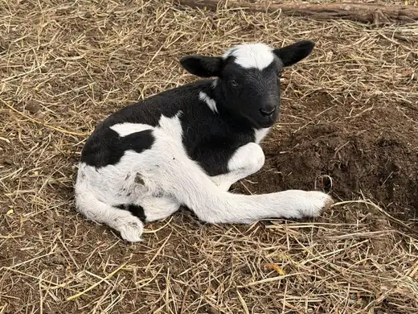
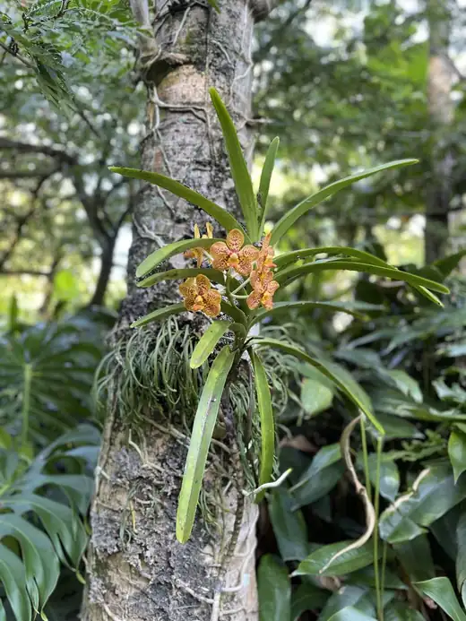
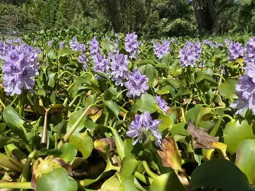
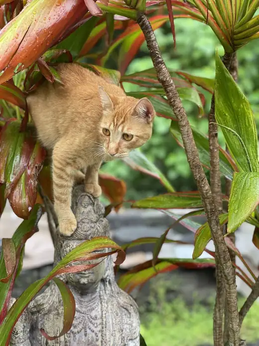

Kalo
Taro grown in living beds — the canoe crop at the heart of Hawaiian agriculture, and of ours.
Maui, Hawaiʻi · 50 acres
505 Farm is a fifty-acre regenerative farm on Maui. We grow food the way healthy land grows itself — building soil, closing loops, and leaving every acre more alive than we found it.
Our story
Mālama ʻāina — to care for the land — isn't a slogan here. It's the whole operating manual. On our fifty acres we farm with the ecosystem rather than against it: mulching deep, keeping soil covered and living, and letting diversity do the work that chemicals do elsewhere.
Our beds run in long polyculture rows at the forest's edge — kalo beside coffee beside coleus and lemongrass — while sheep graze the orchard understory and the food forest fills in overhead. Regenerative isn't a certification for us. It's a direction: every season the soil gets deeper and the farm feeds more life than the year before.
To sustain is not enough. We want to hand this land forward better than we found it.

Morning in the rows — kalo, kale, and lemongrass sharing a bed.
What we grow
A working farm is never the same two weeks in a row. Here's some of what moves through our fields, orchard, and food forest across the year.

Taro grown in living beds — the canoe crop at the heart of Hawaiian agriculture, and of ours.

Hand-tended vanilla orchids climbing bamboo in the shade — patient farming at its most fragrant.

Our orchard rows bloom in cascades — with sheep grazing the understory to close the loop.
Alongside the headliners: bananas, market vegetables, culinary herbs, coffee, and whatever the food forest decides to be generous with this season.
Life on the farm




Community supported agriculture
A weekly box of whatever the farm is proudest of — harvested that morning, shaped by the season. Joining the CSA means you're not just buying produce; you're backing a way of farming.
Ask about sharesVisit & stay
Walk the land with us. See how regenerative farming actually works — from compost to canopy — and taste what's ripe.
Wake up on a working farm. Ask us about staying on Maui and experiencing the island the way we live it.
Good to know
We're on the island of Maui, Hawaiʻi. We share exact directions when you book a visit or pick up a share — email us at aloha@505farm.com and we'll point you our way.
We're a working farm rather than a public attraction, so visits are by arrangement. Get in touch and we'll find a time to walk the land together.
You sign up for a season and pick up a box each week filled with whatever we harvested that morning — kalo, greens, herbs, fruit, and surprises from the food forest. Email us for current availability and pricing.
It means we measure success by what we give back: deeper soil, more shade, more life. No synthetic inputs — just mulch, diversity, animals in rotation, and patience.